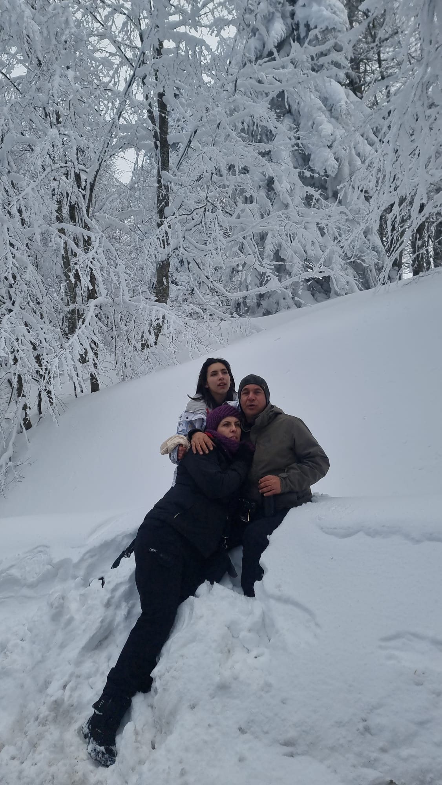
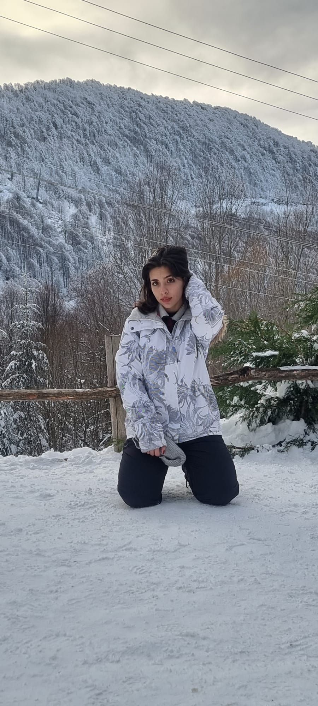
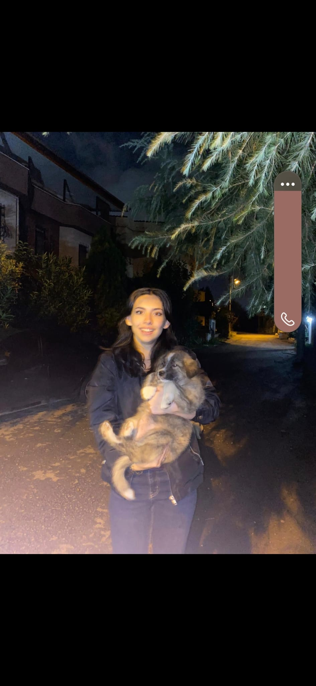
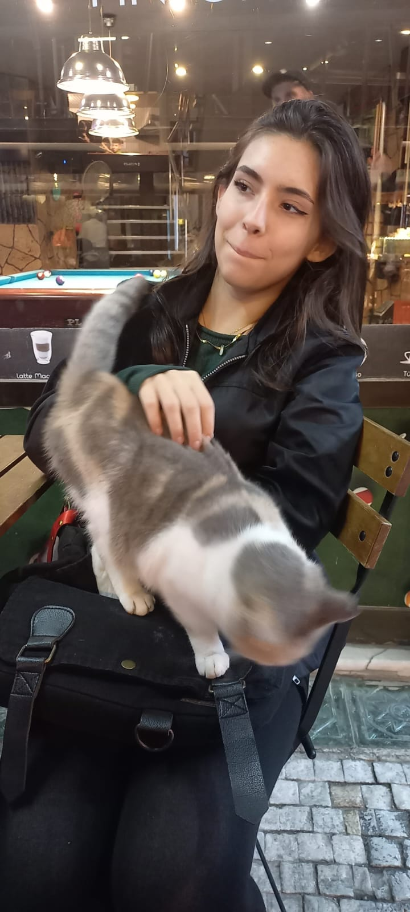
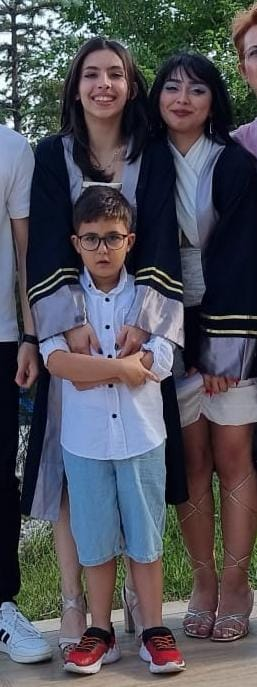
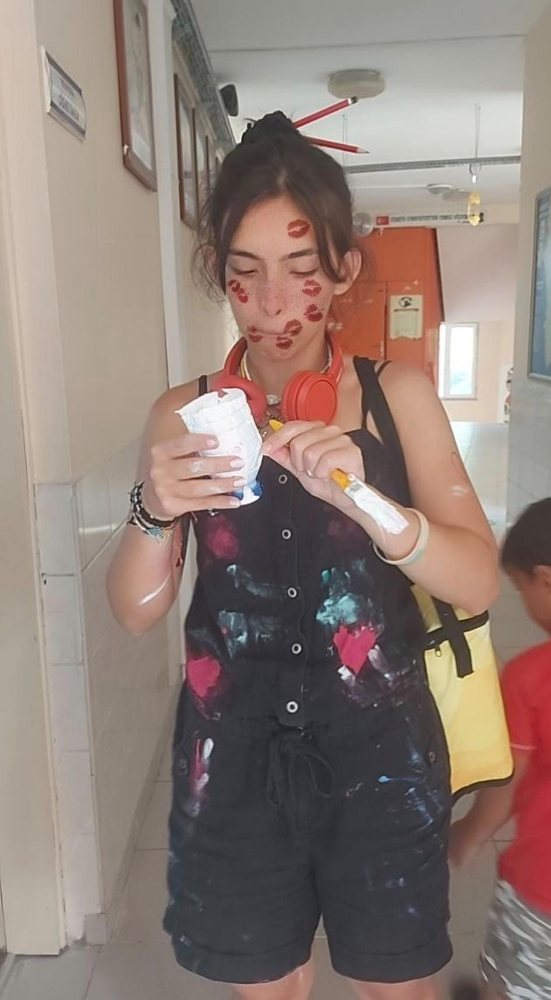
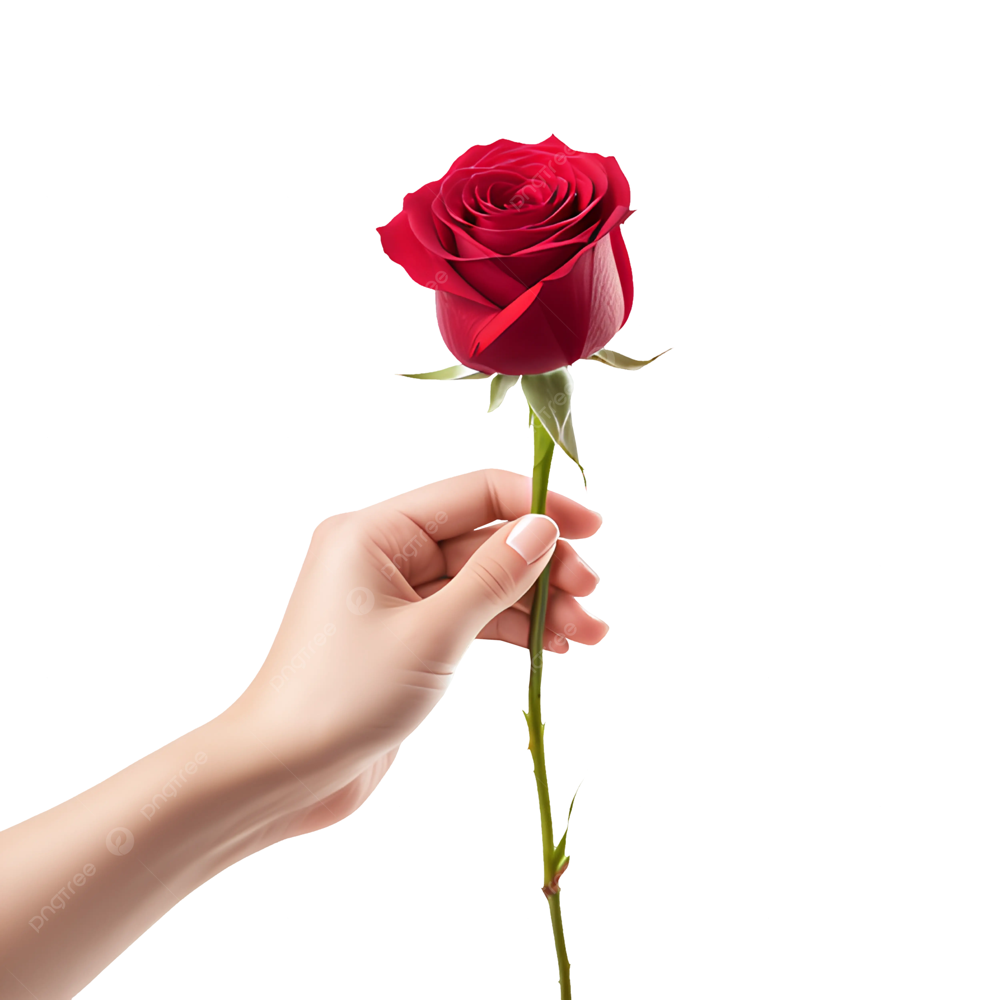

Seninle konuştuğum her an, görünmez iplerinle beni kendine çekiyorsun. Sesin, kelimelerin, hatta sessizliklerin bile bana dokunuyor. Uzaklaşamıyorum, daha az sevemiyorum.
Bazen bir oyun gibi, bazen en beklenmedik anda gülümseten, ama her zaman içimde bir yerlere dokunan bir şey var sende. Fark ettirmeden ağlarını ören, usulca saran…
Seninle her şey başka bir ritimde akıyor, daha yumuşak, daha güzel… Bu hisse her gün daha çok alışıyorum. 💙🕸️

Senin İçin En Güzelini Dilerim ✨
Umarım ailenle geçirdiğin güzel zamanlar hep böyle devam eder ve sana en içten mutluluğu getirir. Sevdiklerinle birlikte olduğun her anın içini ısıtmasını, yüzüne kocaman bir gülümseme kondurmasını dilerim.
Bazen hayat ufak tefek pürüzler çıkarabilir ama senin içindeki güzellik, sevgi ve sabır her şeyi yoluna koyacaktır. Huzurun hep seninle olsun, kalbin daima hafif hissetsin.
Umarım her şey dilediğin gibi olur ve her yeni gün sana daha güzel anılar getirir. Senin mutlu olman, içten gülümsemen, her şeyden daha değerli. ✨💙

Sen… ✨
Bazı insanlar vardır, sadece varlıkları bile bir şeyleri değiştirir. Sen de onlardan birisin. Nerede olursan ol, nasıl hissedersen hisset, benim gözümde hep en özel, en değerli insanlardan birisin.
Farkında olmadan yaptığın en küçük şeyler bile bende iz bırakıyor. Bir bakışın, bir kelimen, hatta bir anlık sessizliğin bile… Kendi ışığını fark ediyor musun bilmiyorum ama sen nereye gidersen git, orayı güzelleştiriyorsun.
Dışarıdan bakan biri sadece güzel bir insan görebilir ama ben senin çok daha fazlası olduğunu biliyorum. Hem güçlü, hem özel, hem de kendine has bir ışığın var. Bunu görmek, hissetmek, bilmek benim için çok değerli.
Bence dünya, senin gibi biri olduğu için biraz daha güzel. ✨💙

Sen ve O Minik Mutluluk 🐶💙
Bu fotoğrafa her baktığımda, içindeki saf sevgiyi görüyorum. O masum bakışlara, sevgiyle uzattığın ellere, içindeki sıcaklığa… Sadece o küçük dostun değil, etrafındaki herkes de senin sevgini hissedebiliyor.
Senin yanında olmak, böyle bir sevginin içinde olmak, insanın kalbini ısıtan bir şey. Sevgin içten, gülümsemen samimi ve dünyaya kattığın güzellikler gerçekten özel.
Senin gibi biri için, sevgililer gününde ne desem az… Ama şunu söyleyebilirim: Sevgin, yanında olan herkesi daha mutlu eden bir şey. Ve bu, her şeyden daha değerli. 💙✨

Gözlerimi Alamıyorum ✨
Bazı fotoğraflar sadece bir anı yakalamaz, içindeki ışığı da gösterir. Bu da tam olarak öyle bir fotoğraf… Senin gülüşün, bakışların, o doğal güzelliğin her şeyi tamamlıyor.
Farkında mısın bilmiyorum ama sen gerçekten göz alıcı bir ışıltıya sahipsin. Öyle bir güzellik ki, sadece dışarıdan değil, içinden de parlıyor.
Bu fotoğraf sadece bir kare değil, senin en güzel halinin bir yansıması. Ve bence sen, her zaman böyle güzelsin. 💙✨

Bir Fotoğraf Yetiyor… ✨
Bazen bir fotoğraf bile her şeyi anlatır. O anı yaşamamış olsam da, sadece bakarak hissettirdiklerine hayran kalıyorum. Gülüşün, içindeki ışık, etrafına yaydığın sıcaklık… Tüm bunlar öyle gerçek ki, sadece bir kareye bakmak bile yetiyor etkilenmek için.
Ama asıl güzel olan, bunun sadece bir anlık olmaması. Senin her hareketinde, özellikle kardeşine karşı gösterdiğin sevgi ve içtenlikte, bu güzellik kendini belli ediyor. Küçük bir anın içinde bile bu kadar özel bir şey saklıysa, seni tanıyanlar için hayat nasıl daha güzel hale geliyordur.
Bence senin gibi biri, sıradan anları bile unutulmaz yapıyor. 💙✨

En Doğal Hâlinle… 🎨✨
Boya yaparken dalıp gitmişsin, en doğal hâlinde, en içten anındasın. Ve işin en güzel yanı, bu seni daha da özel kılıyor. Hiçbir şey yapmaya çalışmadan, sadece kendin olarak bile böylesine güzel ve samimi görünebilmen… İşte bu, asıl hayran olunacak şey.
O anın içindeki huzuru, içtenliği, senin kendine has ışığını izlemek bile yetiyor. Sanki her fırça darbenle sadece bir tabloyu değil, etrafındaki dünyayı da güzelleştiriyorsun.
Bazen en basit anlar, en güzel hisleri saklar. Ve senin her hâlinde, o saf ve özel güzellik var. 💙✨

Senin İçin Bir Gül… 🌹✨
Bir gül, güzelliği ve zarafetiyle dikkat çeker… Ama senin yanında, onun bile soluk kaldığını düşünüyorum. Çünkü sen sadece güzelliğinle değil, içindeki ışıkla, sıcaklığınla, samimiyetinle çok daha özel birisin.
Bu gül, sana olan hayranlığımın küçük bir sembolü. Çünkü sen, en sade hâlinde bile dikkat çeken, baktıkça insanın içini ısıtan, kendine has bir güzelliğe sahipsin.
Umarım bu gül sana tatlı bir tebessüm olur, çünkü senin gülüşün, her çiçekten daha güzel. 💙✨
Mesafeler Engel Değil… 💙✨
Aramızda yollar, şehirler, belki zaman farkları olabilir… Ama hissettiklerim için hiçbir mesafe engel değil. Seni düşündüğümde, hissettiklerimde hiçbir uzaklık yok. Sanki her an yanı başımdaymışsın gibi, ne kadar uzakta olursak olalım, kalplerimiz aynı yerde atıyormuş gibi.
Seninle konuşmak, seni tanımak, her geçen gün sana daha da yakın hissetmek benim için tarif edilemez bir şey. Ve bunu sadece uzaktan hissetmek istemiyorum… Seninle daha fazlasını yaşamak, yanında olabilmek, ilişkimizi bir adım daha ileri taşımak istiyorum.
Çünkü ben seni gerçekten çok seviyorum. Mesafeler, yollar, zaman farkları… Bunların hiçbiri, senin benim için ne kadar özel olduğunu değiştiremez. 💙✨